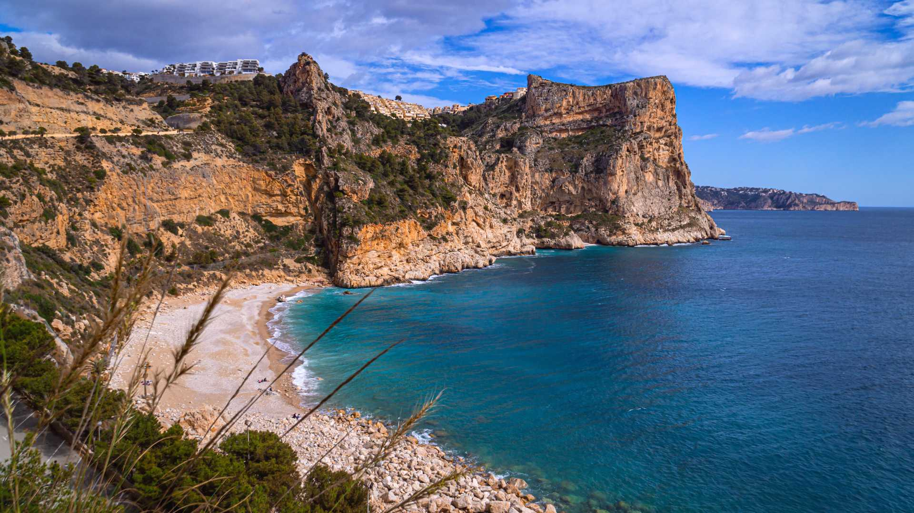

-
CIUDAD DE LAS ARTES Y LAS CIENCIAS

Ciudad de Las Ciencias y Las Artes. Lugar emblemático. Ciudad de Las Ciencias y Las Artes. Lugar emblemático. Ciudad de Las Ciencias y Las Artes. Lugar emblemático. Ciudad de Las Ciencias y Las Artes. Lugar emblemático.
-
CASCO HISTÓRICO

Barrio emblemático de Valencia, lleno de magia e historia. Barrio emblemático de Valencia, lleno de magia e historia. Barrio emblemático de Valencia, lleno de magia e historia. Barrio emblemático de Valencia, lleno de magia e historia.
-
PLAYAS VALENCIANAS
Increíbles zonas costeras bañadas por el Mediterráneo. Increíbles zonas costeras bañadas por el Mediterráneo. Increíbles zonas costeras bañadas por el Mediterráneo. Increíbles zonas costeras bañadas por el Mediterráneo.